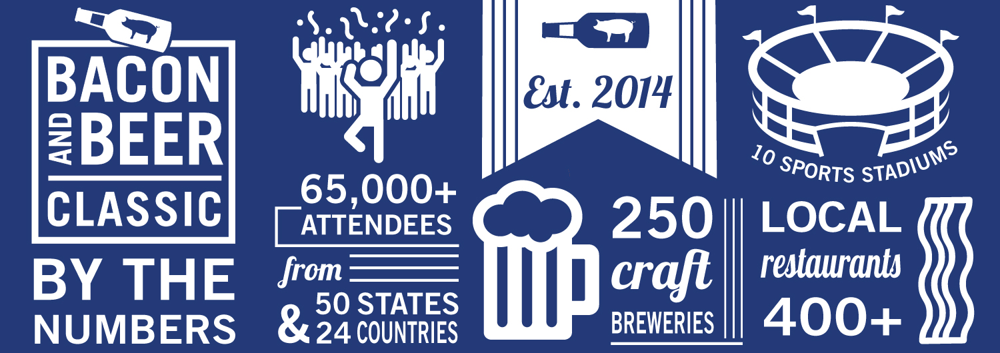
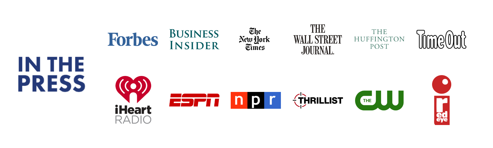
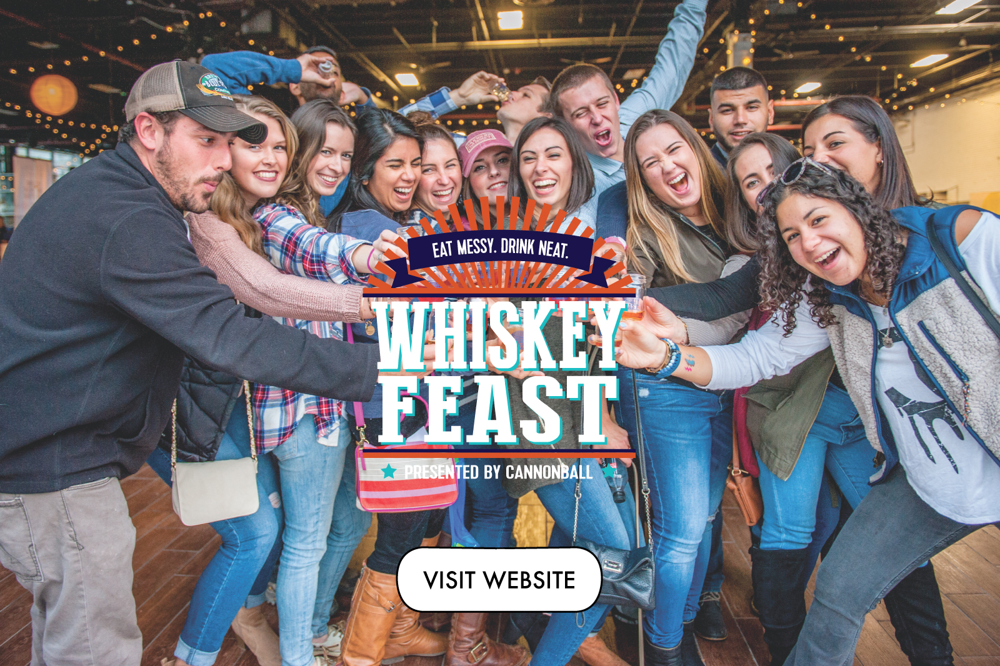
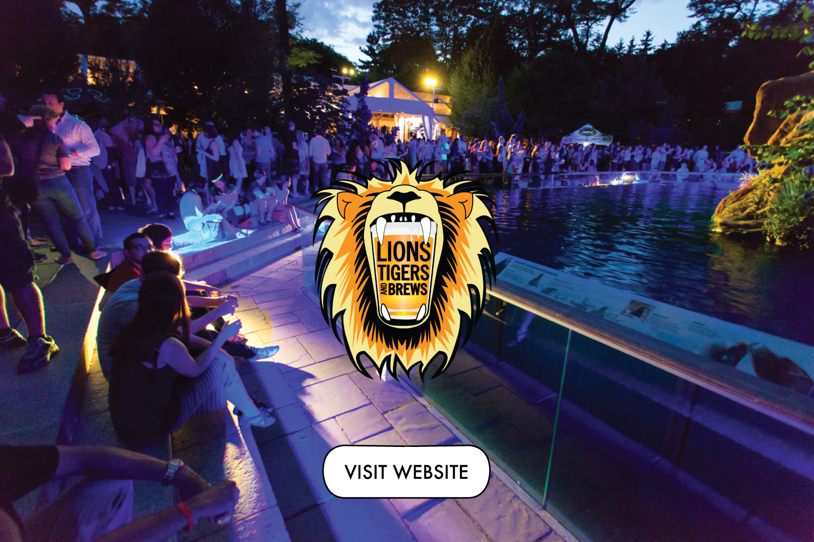

The Bacon and Beer Classic is one of the fastest growing food and beverage festivals hosted in iconic sports stadiums across the country. This all-inclusive event features 30+ bacon dishes from local restaurants, 80+ craft beers from local and regional breweries, games, music and more. The Classic has drawn sold-out crowds in over 10 cities, including New York, Chicago, Seattle and SF.
  Whiskey Feast pairs dozens of whiskies, cocktails andcraft beers with seasonal fare from 20+ local restaurants. Guests indulge in unlimited bites and sips, live music, a mustache bar, horseshoes, corn hole and more at this nationally-touring festival.
When the ats are away, the beer lovels will play! This craft beer festival is hosted inside zoos aross the country, and features over 150 sudsy selections from 60+ local and regional breweries. In addition to sipping craft beer, guests are welcome to explore a diverse array of wildlife, play games and munch dishes from the best local food trucks and restaurants.